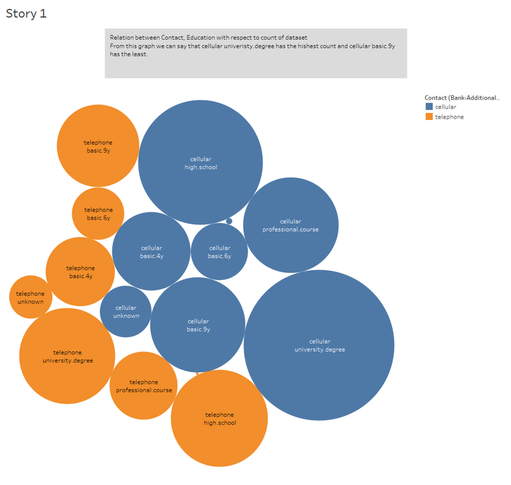
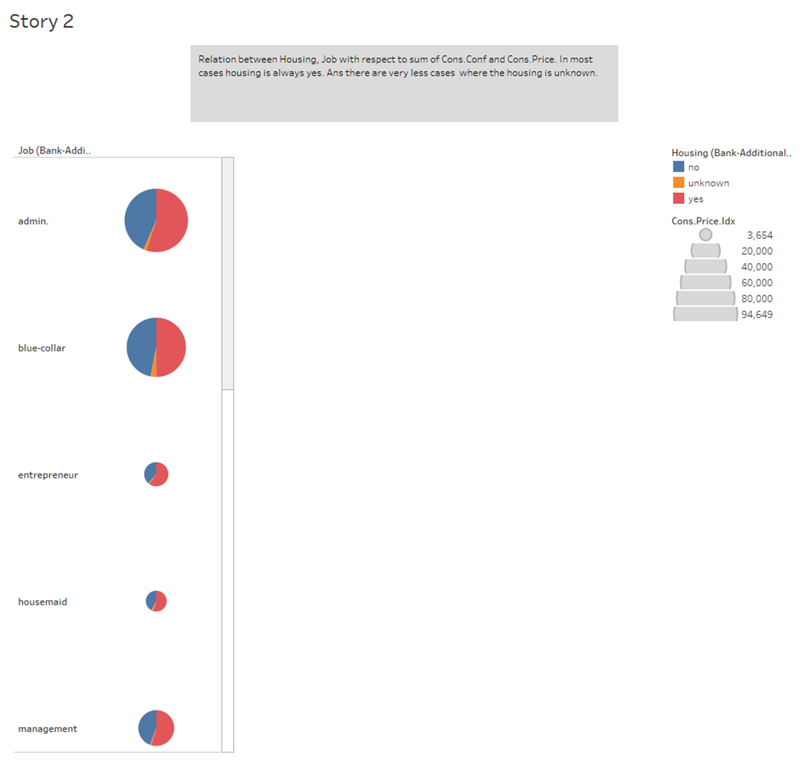
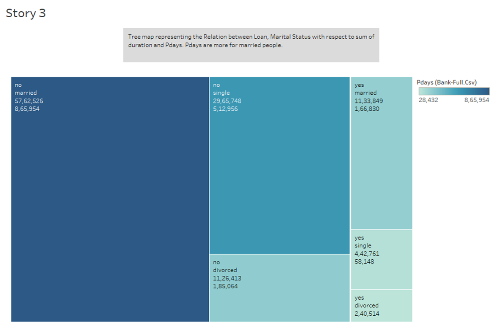
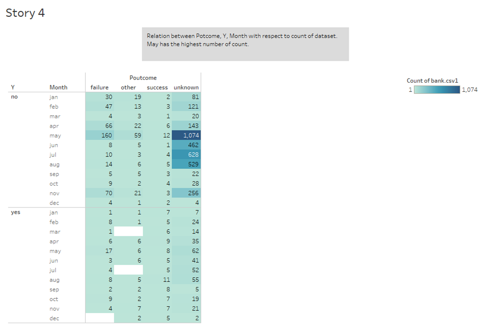
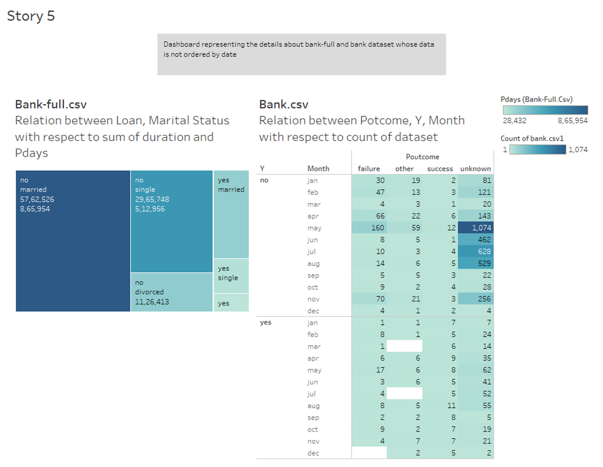
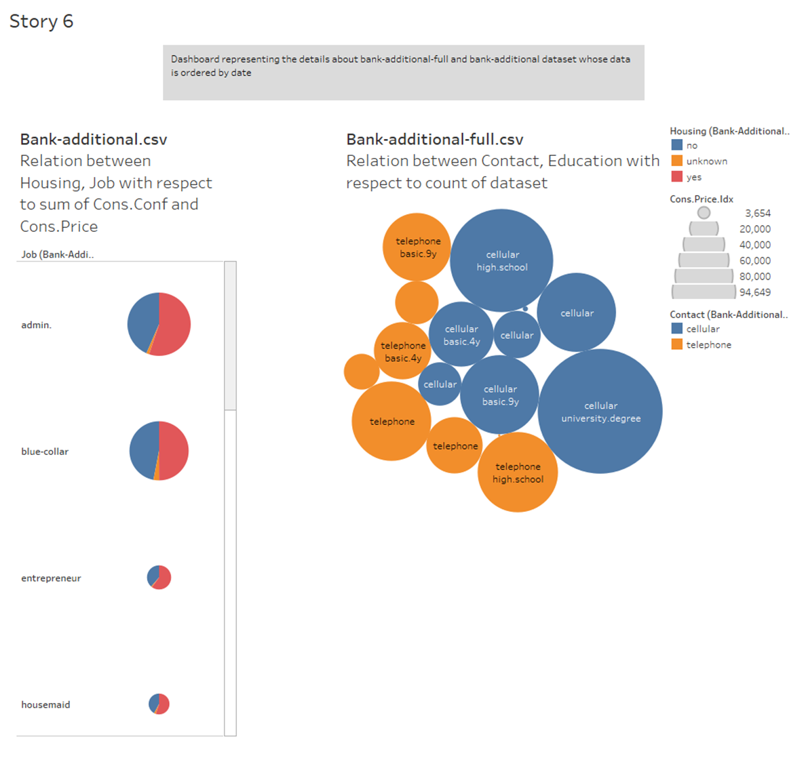
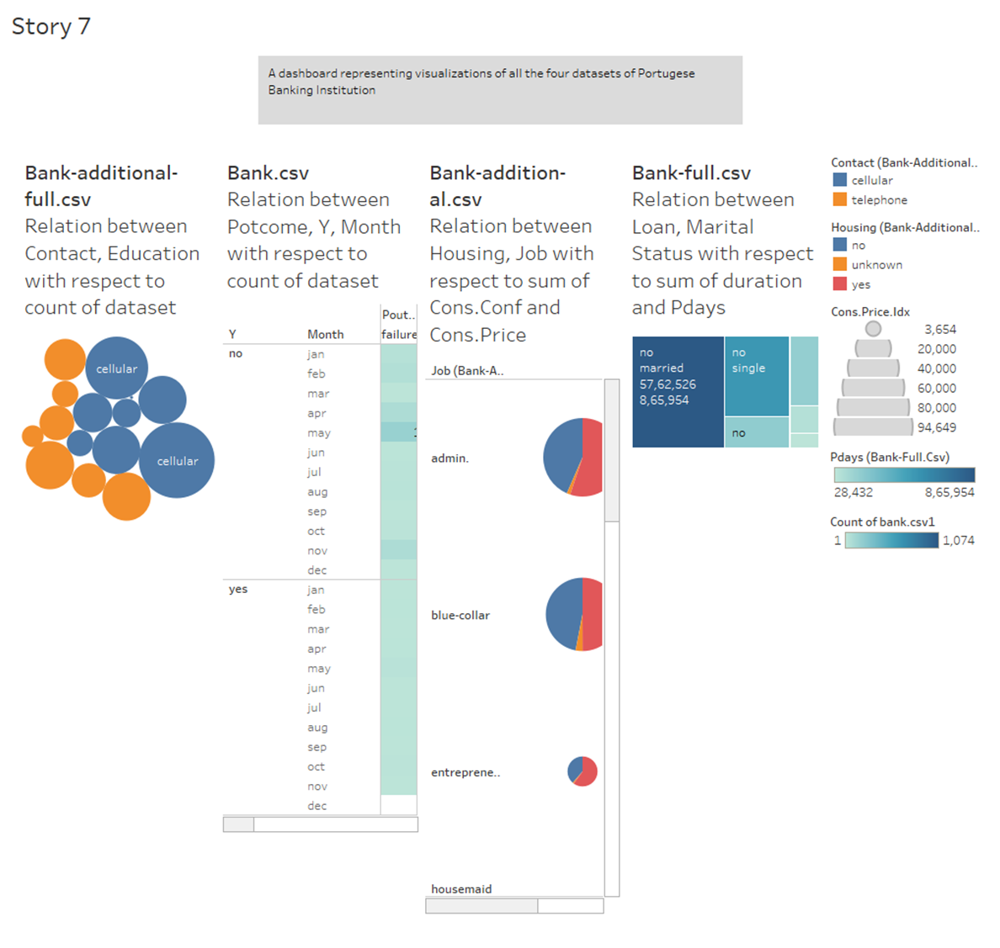

Stories
Tableau Stories Visualization
Distribution of Contact Method and Education Level in Dataset

Impact of Housing and Job Type on Consumer Confidence and Price Index

Tree Map of Loan Status and Marital Status Impact on Duration and Pdays

Analysis of Potcome, Subscription Status, and Monthly Counts in Dataset

Dashboard Overview of Bank-full and Bank Datasets

Dashboard Overview of Bank-additional-full and Bank-additional Datasets

Comprehensive Dashboard of Portuguese Banking Institution Datasets
